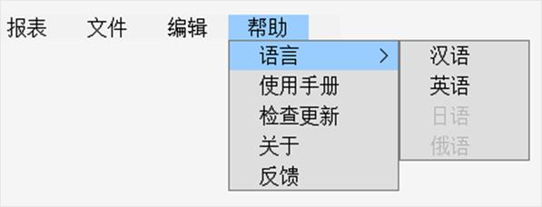
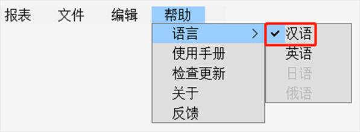
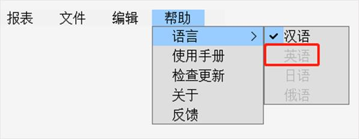

|
类型 |
菜单元件操作指令 |
|
描述 |
获取/修改菜单项状态 |
|
语法 |
HMI_MENUITEM(id, option, value [,winid, controlid]) value = HMI_MENUITEM(id, option [,winid, controlid]) id：菜单项编号（ID） option：数据选项 0 �C 设置菜单项选中（勾选）状态 1 �C 设置菜单项灰阶（禁用）状态 value：选项值 option = 0时， value = 0：将此菜单项设为非选中状态 value ≠ 0：将此菜单项设为选中状态 option = 1时， value = 0：将此菜单项设为正常状态 value ≠ 0：将此菜单项设为灰阶状态 winid：HMI文件里面窗口编号，缺省当前窗口 controlid：元件编号，缺省当前元件 |
|
适用控制器 |
支持RTHmi |
|
例子 |
HMI_MENUITEM(1031, 0, 1, 10, 1) ’将10号窗口第1个元件中菜单编号为1031的项设为选中状态 HMI_MENUITEM(1032, 1, 0, 10, 1) ’将10号窗口第1个元件中菜单编号为1032的项设为灰阶状态 运行效果如下： Ø 在本菜单中，“汉语”的菜单编号为1031，“英语”的菜单编号为1032  Ø 在“在线命令”中输入第一行指令后，菜单栏中“汉语”被勾选  Ø 在“在线命令”中输入第二行指令后，菜单栏中“英语”被禁用  |